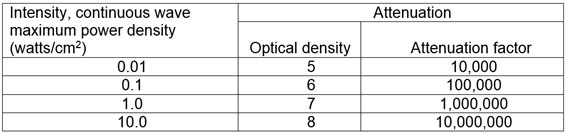

06.G Non-ionizing Radiation, Magnetic and Electric Fields
06.G.01–06.G.02
06.G.01 Lasers.
- Only qualified and trained employees may be assigned to install, adjust, and operate laser equipment. Proof of qualification of the laser equipment operator shall be in the operator's possession during operation. A qualified employee shall design or review for adequacy all radiation safety Standard Operating Procedure (SOP).
- Laser equipment shall bear a label to indicate make, maximum output, and beam spread.
- Areas in which lasers are used shall be posted with standard laser warning signs. > See Figures 8-5 and 8-6
- Employees whose work requires exposure to laser beams shall be provided with appropriate laser safety goggles that will protect for the specific wavelength of the laser and be of optical density adequate for the energy involved, as specified in Table 6-2. Protective goggles shall bear a label identifying the following data: the laser wavelengths for which use is intended, the optical density of those wavelengths, and the visible light transmission.
TABLE 6-2
Laser Safety Goggle Optical Density Requirements

-
Beam shutters or caps shall be used, or the laser turned off, when laser transmission is not required. When the laser is left unattended for a period of time (e.g., during lunch hour, overnight, or at change of shifts) the laser shall be turned off.
- Only mechanical or electronic means shall be used as a detector for guiding the internal alignment of the laser.
- The laser beam shall not be directed at employees: whenever possible, laser units in operation shall be set above the heads of employees.
- When it is raining or snowing or when there is dust or fog in the air, the operation of laser systems shall be prohibited (as practical); during such weather conditions employees shall be kept out of range of the areas of source and target.
- Employee exposure to laser power densities shall be within the TLVs as specified by the ACGIH in "Threshold Limit Values and Biological Exposure Indices."
- Only Class 1, 2, or 3a lasers may be used as hand-held pointing devices. Lasers used as pointing devices (e.g., during briefings) shall not be directed toward employees and shall be handled and stored in accordance with the manufacturer's recommendations.
- Suspected LASER eye injuries: Immediately evacuate personnel suspected of experiencing potentially damaging eye exposure from LASER radiation to the nearest medical facility for an eye examination. LASER eye injuries require immediate specialized ophthalmologic care to minimize long-term visual acuity loss. Medical personnel should obtain medical guidance for LASER injuries from the Tri-Service LASER Incident Hotline, (800) 473-3549 (24-hour phone line).
06.G.02 Radio frequency and electromagnetic radiation.
- Ensure that no employee is exposed to electric or magnetic fields, radio frequency (RF) including infrared, ultraviolet, and microwave radiation levels exceeding the values listed in the ACGIH Threshold Limit Values and Biological Exposure Indices.
- Routine use of RF protective clothing to protect personnel is prohibited.
- Protective equipment, such as electrically insulated gloves and shoes for protection against RF shock and burn, or for insulation from the ground plane, is permissible when engineering controls or procedures cannot eliminate exposure hazards.
- Users will identify, attenuate, or control potentially hazardous RF electromagnetic fields and other radiation hazards associated with electronic equipment by engineering design, administrative actions, or protective equipment, (in that order), or a combination thereof. Use process and engineering controls before PPE to protect employees.
- All personnel routinely working with RF emitting equipment where exposures may exceed TLVs will receive training in RF hazards, procedures for minimizing these hazards, and their responsibility to limit potential overexposures. Operator's manuals, Training Orders, Equipment SOPs, etc. will be available for all RF generating equipment and safety guidance will be followed.
- Whenever personnel are potentially exposed to RF fields exceeding PELs, the fields will be measured and evaluated using Institute of Electrical and Electronics Engineers (IEEE) guidance. District and/or project safety personnel will use this information and document RF environments. Where multiple RF electromagnetic radiation emitters are located in fixed arrangements, RF evaluation data will include a determination of weighted contributions from expected simultaneously operated emitters
{kind=link}